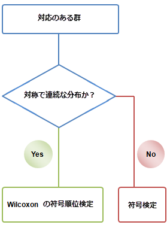
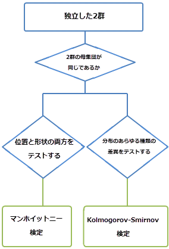
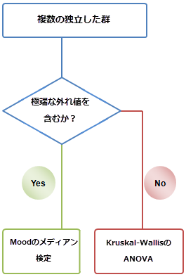

ノンパラメトリック検定は、正規性の仮定を必要としません。一般に、次のような状況で使用されます。
| ノンパラメトリック | パラメトリック | ||
|---|---|---|---|
|
あらゆる分布のデータ |
正規分布のデータ |
||
| 1群 | Wilcoxonの符号順位検定 | 1群のt検定 | |
| 2群 | 独立した群 |
|
2群のt検定 |
| 対応のある群 |
|
対応のあるt検定 | |
| 複数群 | 独立した群 |
|
一元配置ANOVA |
| 関連した群 | FriedmanのANOVA | 繰り返し測定のある一元配置ANOVA |
1群のWilcoxon の符号順位検定は、1群のt検定のノンパラメトリックな手法です。この検定は、標本の中央値が特定の値に等しいかどうかを検定します。データは、中央値で対称である必要があります。
|
対応のある群のWilcoxon の符号順位検定は、対応のあるt検定のノンパラメトリックな手法です。対応のある群は、単一の母集団から無作為に抽出されると推定されます。対応のある群間の差は、中央値に関して対称に分布していると想定されます。 対サンプルの符号検定は、2つの独立した群が同じ分布かどうかを調べる対応のあるt検定に対するノンパラメトリックな検定です。対サンプル間の集計（+）と（-）の差をテストし、2つが同じ数で存在するかどうかをテストします。統計的に強力な検定とは見なされませんが、満たす必要がある唯一の要件は、対サンプル間の差が独立しており、同じ連続母集団内に差が存在し、測定値はそれらが互いにより大きい、等しい、または小さいと判断できるあるスケールに沿って存在することです。 |
 |
|
マンホイットニー検定（M-W）は、2群のt検定の便利なノンパラメトリック代替法です。マンホイットニー検定は2群のt検定とほぼ同程度に強力ですが、ノンパラメトリックなので、特定の条件ではより有用な検定と見なされます。 マンホイットニー検定は、2群のKolmogorov-Smirnov検定と同様の結果を頻繁に生成しますが、2つの検定は、場所と分布の変化に対する感度の違いを示します。 2群Kolmogorov-Smirnov検定（K-S）は、2群のt検定のノンパラメトリック代替法です。一般に、Kolmogorov-Smirnov検定では2群間の符号なしの差を使用して、2群が同じ連続分布から抽出されているかどうかを判断します。 Kolmogorov-Smirnov検定とマンホイットニー検定は、同様の分析で使用できます。一方、Kolmogorov-Smirnov検定は分布の形状と位置の両方を検定するため、より強力ではありませんが、より包括的なものと見なされます |
 |
|
Kruskal-WallisのANOVA Kruskal-WallisのANOVAは、一元配置分散分析（ANOVA）のノンパラメトリックな代替手段です。Kruskal-WallisのANOVAはランク合計を使用して、同じ分布から3つ以上の独立したサンプルを取得するかどうかを決定します（2つのサンプルを比較する場合、マンホイットニー検定がより頻繁に使用されます）。Kruskal-WallisのANOVAの結果が重要な場合は、サンプルのペア間の事後検定を使用して、どのペアに大きな違いがあるかを判断できます。 Moodのメディアン検定 Moodのメディアン検定は、一元配置分散分析（ANOVA）のノンパラメトリックな代替手段です。Moodの中央値は、2つのサンプルの中央値が等しい可能性をテストするため、同じ母集団から抽出されます。Moodの中央値は、中央値よりも大きいまたは小さい変量の数のみを考慮し、中央値との実際の差は考慮しません。したがって、それはKruskal-WallisのANOVAの強力ではない代替手段と見なされます。しかしながら、データセットに極端な外れ値が含まれる場合は、より堅牢です。 |
 |
FriedmanのANOVA
FriedmanのANOVAは、繰り返し測定のある一元配置ANOVAのノンパラメトリックな代替手段です。
FriedmanのANOVAは、同じ被験者で繰り返される従属サンプルまたは観測を比較するために使用できます。したがって、このテストはランダム化されたブロック設計に適しています。
|
このセクションで説明している項目 |